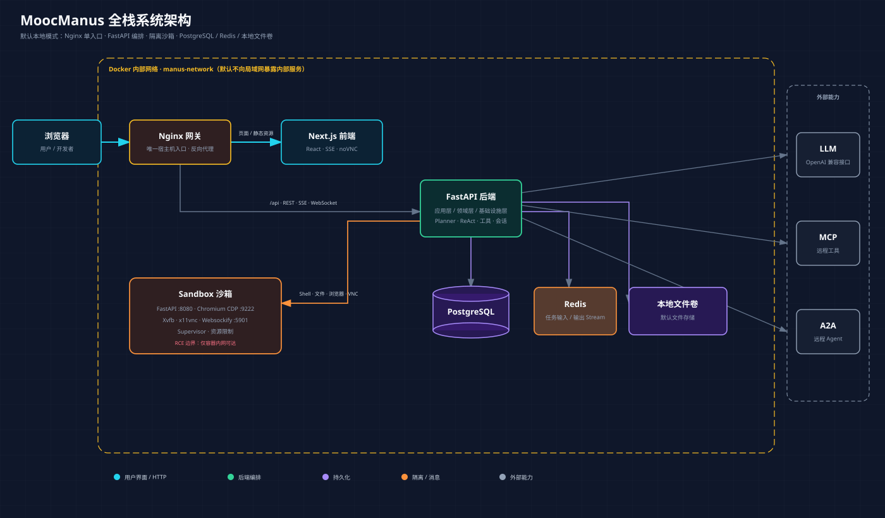

Python 与 FastAPI
异步函数、依赖注入、Pydantic、分层架构、Repository 与 UoW。
阅读章节 →这不是替代 Markdown 教材的“炫技页面”，而是一间离线实验室。点击架构节点、逐帧播放 Planner/ReAct、生成安全配置并完成测验，再回到源码逐文件验证。
api/config.yaml。异步函数、依赖注入、Pydantic、分层架构、Repository 与 UoW。
阅读章节 →计划、执行、工具调用、记忆、失败状态和任务生命周期。
阅读章节 →本地/远程工具发现与远程 Agent 委托，以及 enabled 安全契约。
阅读章节 →长期事实、运行态流、断线恢复和浏览器事件投影。
阅读章节 →ReadableStream、归一化、时间线、工具卡片和 noVNC。
阅读章节 →六服务 Compose、唯一入口、静态/动态沙箱和生产缺口。
阅读章节 →节点不是“技术名词墙”。每个服务都应有单一主要职责、明确入口和失败表现。

长期业务事实。刷新详情页时重建历史时间线。
durablequery活跃任务的低延迟通道。当前有长度上限、24 小时 TTL 和销毁清理。
replayboundedHTTP 单向推送到浏览器。POST 聊天使用 fetch + ReadableStream 自行解析。
streamevent_id两帧共享稳定的 tool_call_id：前一帧让 UI 立即显示“调用中”，后一帧带回结果。前端应更新同一张卡片。
event: tool
data: {"tool_call_id":"call-7","function":"shell_execute","status":"calling"}
event: tool
data: {"tool_call_id":"call-7","function":"shell_execute","status":"called"}
携带最后 event_id 从后续位置恢复。网络系统仍应容忍重复，不能宣称天然“恰好一次”。
生成内容故意把 API key 留空。COS 模式只生成占位符；真实凭据不得进入 Git、截图、Issue 或教程。
不挂 Docker Socket，只在内部网络开放。适合可信单用户学习。
每会话隔离更好，但控制 Docker Socket 接近宿主机 root 能力，必须显式启用。
Prompt、网页、文件、MCP、A2A 和模型生成参数都可能诱导危险工具调用。
真实值只放忽略文件或秘密管理器。进入历史后先吊销，再重写历史。
当前没有完整认证、租户授权、限流、CSRF、恶意文件扫描与强沙箱隔离。
CPU、内存、PID、Shell 输出、Redis Stream 都必须有上限和清理路径。
勾选项保存在当前浏览器的 localStorage，只代表你的学习记录，不会发送到网络。